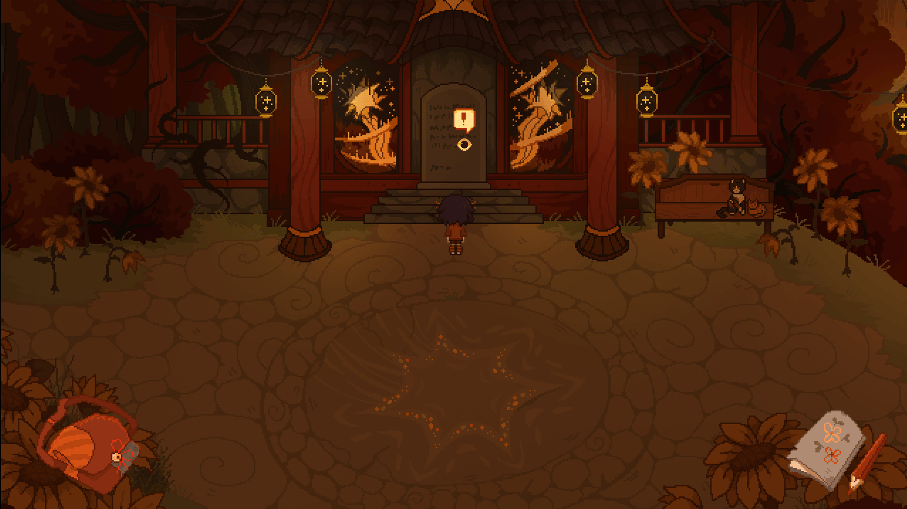
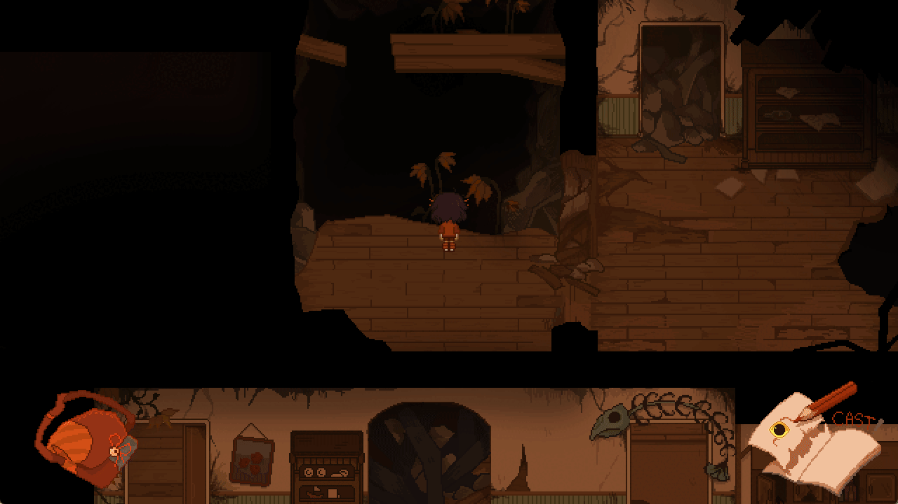
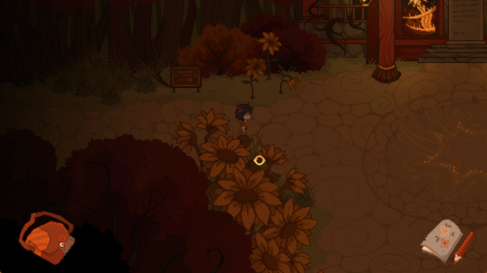
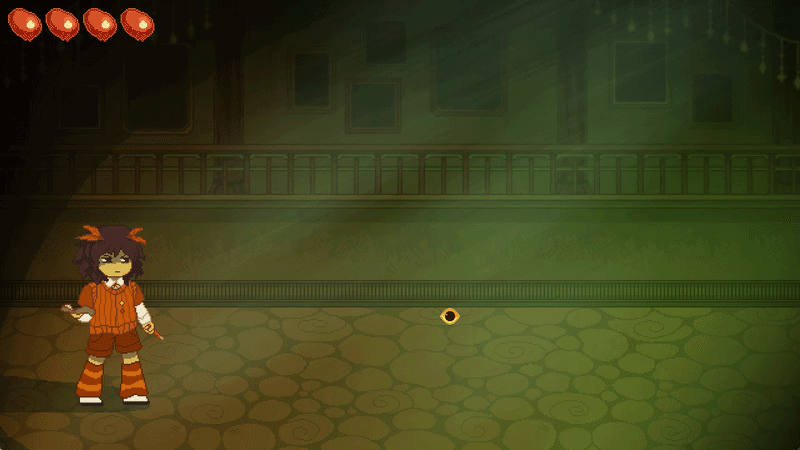
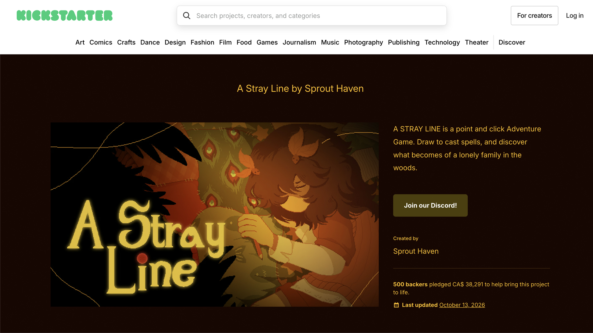

Drawing Based Exploration
Point and click with your mouse to interact with the environment, solve puzzles, and draw in your notebook to cast spells.



Kickstarter Campaign
The development and future of A Stray Line was funded through a successful Kickstarter campaign, concluded in September 2026. 500 wonderful backers helped bring the game to life!
